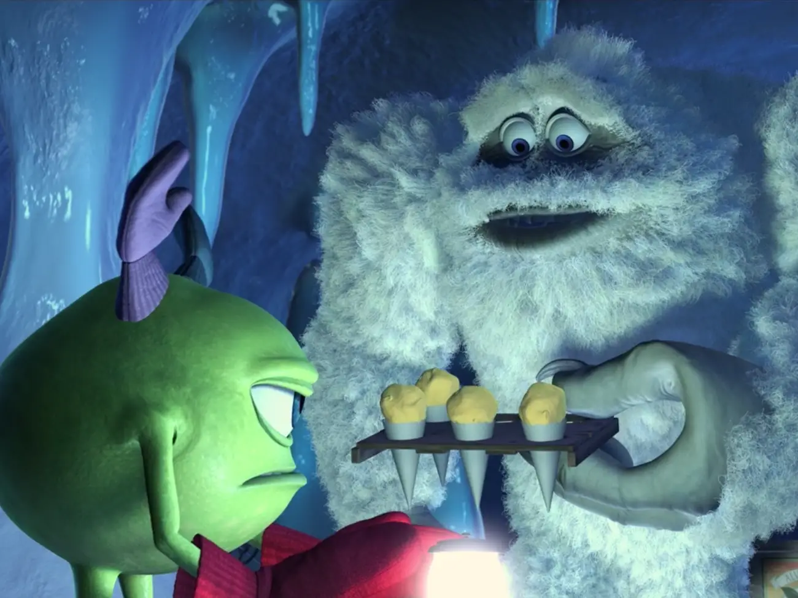

Monsters Inc Snow Cones

Never eat yellow snow....
Makes 9-12 snow cones
Ingredients
- 1 cup lemon juice (6 lemons)
- 2 cups sugar
- 2 tablespoons corn syrup
- ¼ cup water
- Yellow food coloring gel
- Ice
Equipment
- Snow cone machine
- Snow cone holder
- Snow cone cups
- Small Pot
- Large bowl
- Whisk
- Rubber spatula
- Funnel
Steps
- Simmer lemon juice, sugar, corn syrup and water over medium heat and whisk until well combined.
- Remove from heat and add yellow food coloring until the syrup is a lemon color. Allow the syrup to cool completely.
- Use a snow cone machine to make shaved ice. Pour the lemon syrup into a large bowl of shaved ice and mix well with a rubber spatula.
- Scoop the lemon shaved ice into snow cone cups and then drizzle a little more syrup over the tops.
Back to the Homepage